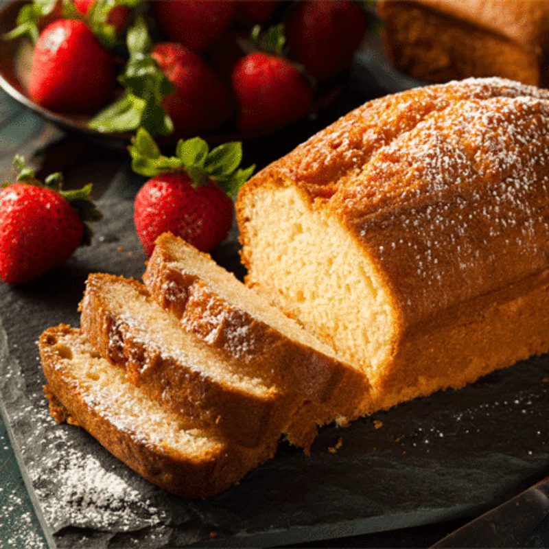

My favourite food is cake, because it is very delicious. Although cake is very sweet, it looks very beautiful. On my birthday, my mother always make homemade cake for me. I also like spicy foods.
It is a simple recipe and you can begin by mixing sugar and butter together. whisk well until light and fluffy.once done, add the beaten eggs and blend well. Beat Futher so that the mixture gets a light, white appearance.
Sift together the all purpose flour and baking soda. Gradually add this to the egg mixture. Then add vanilla essence and blend well.
You can keep the baking dish on an inverted steel plate. Increase the flame and pressure cook for two minutes. Now remove the whistle and cook on low flame for 35-40 minutes.
Insert a knife or a metal skewer into the cake and if it comes out clean, then the cake is ready to devour in. Remove from oven/cooker and allow to cool on a wire rack.🎂
